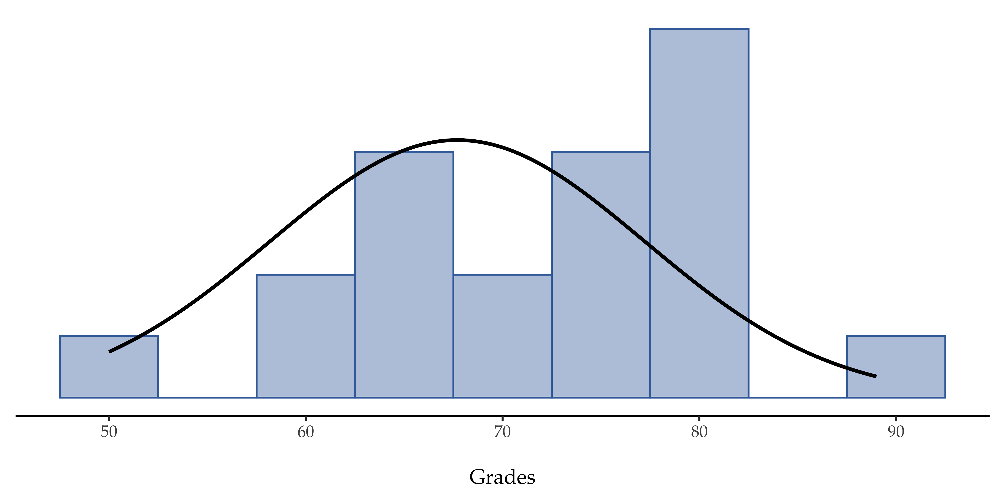
11 Comparing two means
In Chapter 10 we covered the situation when your outcome variable is nominal scale and your predictor variable is also nominal scale. Lots of real world situations have that character, and so you’ll find that chi-square tests in particular are quite widely used. However, you’re much more likely to find yourself in a situation where your outcome variable is interval scale or higher, and what you’re interested in is whether the average value of the outcome variable is higher in one group or another. For instance, a psychologist might want to know if anxiety levels are higher among parents than non-parents, or if working memory capacity is reduced by listening to music (relative to not listening to music). In a medical context we might want to know if a new drug increases or decreases blood pressure. An agricultural scientist might want to know whether adding phosphorus to Australian native plants will kill them.1 In all these situations our outcome variable is a fairly continuous, interval or ratio scale variable, and our predictor is a binary “grouping” variable. In other words, we want to compare the means of the two groups.
The standard answer to the problem of comparing means is to use a t-test, of which there are several varieties depending on exactly what question you want to solve. As a consequence, the majority of this chapter focuses on different types of t-test: one sample t-tests, independent samples t-tests and paired samples t-tests. We’ll then talk about one sided tests and, after that, we’ll talk a bit about Cohen’s d, which is the standard measure of effect size for a t-test. The later sections of the chapter focus on the assumptions of the t-tests, and possible remedies if they are violated. However, before discussing any of these useful things, we’ll start with a discussion of the z-test.
11.1 The one-sample z-test
In this section I’ll describe one of the most useless tests in all of statistics: the z-test. Seriously – this test is almost never used in real life. Its only real purpose is that, when teaching statistics, it’s a very convenient stepping stone along the way towards the t-test, which is probably the most (over)used tool in all statistics.
11.1.1 The inference problem that the test addresses
To introduce the idea behind the z-test, let’s use a simple example. A friend of mine, Dr Zeppo, grades his introductory statistics class on a curve. Let’s suppose that the average grade in his class is \(67.5\), and the standard deviation is \(9.5\). Of his many hundreds of students, it turns out that 20 of them also take psychology classes. Out of curiosity, I find myself wondering if the psychology students tend to get the same grades as everyone else (i.e., mean \(67.5\)) or do they tend to score higher or lower? He emails me the zeppo.csv file, which I use to look at the grades of those students, in the jamovi spreadsheet view,and then calculate the mean in ‘Exploration’ - ‘Descriptives’ 2. The mean value is \(72.3\).
50 60 60 64 66 66 67 69 70 74 76 76 77 79 79 79 81 82 82 89
Hmm. It might be that the psychology students are scoring a bit higher than normal. That sample mean of \(\bar{X} = 72.3\) is a fair bit higher than the hypothesised population mean of \(\mu = 67.5\) but, on the other hand, a sample size of \(N = 20\) isn’t all that big. Maybe it’s pure chance.
To answer the question, it helps to be able to write down what it is that I think I know. Firstly, I know that the sample mean is \(\bar{X} = 72.3\). If I’m willing to assume that the psychology students have the same standard deviation as the rest of the class then I can say that the population standard deviation is \(\sigma = 9.5\). I’ll also assume that since Dr Zeppo is grading to a curve, the psychology student grades are normally distributed.
Next, it helps to be clear about what I want to learn from the data. In this case my research hypothesis relates to the population mean \(\mu\) for the psychology student grades, which is unknown. Specifically, I want to know if \(\mu = 67.5\) or not. Given that this is what I know, can we devise a hypothesis test to solve our problem? The data, along with the hypothesised distribution from which they are thought to arise, are shown in Figure 11.1 . Not entirely obvious what the right answer is, is it? For this, we are going to need some statistics.
11.1.2 Constructing the hypothesis test
The first step in constructing a hypothesis test is to be clear about what the null and alternative hypotheses are. This isn’t too hard to do. Our null hypothesis, \(H_0\), is that the true population mean \(\mu\) for psychology student grades is \(67.5\%\), and our alternative hypothesis is that the population mean isn’t \(67.5\%\). If we write this in mathematical notation, these hypotheses become:
\[ H_0:\mu= 67.5 \] \[ H_1:\mu \neq 67.5 \]
though to be honest this notation doesn’t add much to our understanding of the problem, it’s just a compact way of writing down what we’re trying to learn from the data. The null hypotheses \(H_0\) and the alternative hypothesis \(H_1\) for our test are both illustrated in Figure 11.2. In addition to providing us with these hypotheses, the scenario outlined above provides us with a fair amount of background knowledge that might be useful. Specifically, there are two special pieces of information that we can add:
- The psychology grades are normally distributed.
- The true standard deviation of these scores \(\sigma\) is known to be 9.5.
For the moment, we’ll act as if these are absolutely trustworthy facts. In real life, this kind of absolutely trustworthy background knowledge doesn’t exist, and so if we want to rely on these facts we’ll just have make the assumption that these things are true. However, since these assumptions may or may not be warranted, we might need to check them. For now though, we’ll keep things simple.
The next step is to figure out what we would be a good choice for a diagnostic test statistic, something that would help us discriminate between \(H_0\) and \(H_1\). Given that the hypotheses all refer to the population mean \(\mu\), you’d feel pretty confident that the sample mean \(\bar{X}\) would be a pretty useful place to start. What we could do is look at the difference between the sample mean \(\bar{X}\) and the value that the null hypothesis predicts for the population mean. In our example that would mean we calculate \(\bar{X} - 67.5\). More generally, if we let \(\mu_0\) refer to the value that the null hypothesis claims is our population mean, then we’d want to calculate
\[\bar{X}-\mu_0\]
If this quantity equals or is very close to 0, things are looking good for the null hypothesis. If this quantity is a long way away from 0, then it’s looking less likely that the null hypothesis is worth retaining. But how far away from zero should it be for us to reject H0?
To figure that out we need to be a bit more sneaky, and we’ll need to rely on those two pieces of background knowledge that I wrote down previously; namely that the raw data are normally distributed and that we know the value of the population standard deviation \(\sigma\). If the null hypothesis is actually true, and the true mean is \(\mu_0\), then these facts together mean that we know the complete population distribution of the data: a normal distribution with mean \(\mu_0\) and standard deviation \(\sigma\).3
Okay, if that’s true, then what can we say about the distribution of \(\bar{X}\)? Well, as we discussed earlier (see Section 8.3.3), the sampling distribution of the mean \(\bar{X}\) is also normal, and has mean \(\mu\). But the standard deviation of this sampling distribution \(\\{se(\bar{X})\\}\), which is called the standard error of the mean, is 4
\[se(\bar{X}=\frac{\sigma}{\sqrt{N}})\]
Now comes the trick. What we can do is convert the sample mean \(\bar{X}\) into a standard score (see Section 4.5). This is conventionally written as z, but for now I’m going to refer to it as \(z_{\bar{X}}\). The reason for using this expanded notation is to help you remember that we’re calculating a standardised version of a sample mean, not a standardised version of a single observation, which is what a z-score usually refers to). When we do so the z-score for our sample mean is
\[z_{\bar{X}}=\frac{\bar{X}-\mu_0}{SE(\bar{X})}\] or, equivalently \[z_{\bar{X}}=\frac{\bar{X}-\mu_0}{\frac{\sigma}{\sqrt{N}}}\]
This z-score is our test statistic. The nice thing about using this as our test statistic is that like all z-scores, it has a standard normal distribution:5
In other words, regardless of what scale the original data are on, the z-statistic itself always has the same interpretation: it’s equal to the number of standard errors that separate the observed sample mean \(\bar{X}\) from the population mean \(\mu_0\) predicted by the null hypothesis. Better yet, regardless of what the population parameters for the raw scores actually are, the 5% critical regions for the z-test are always the same, as illustrated in Figure 11.3. And what this meant, way back in the days where people did all their statistics by hand, is that someone could publish a table like Table 11.1. This, in turn, meant that researchers could calculate their z-statistic by hand and then look up the critical value in a text book.
\[z_{\bar{X}} \sim Normal(0,1) \]
| critical z value | ||
|---|---|---|
| desired \(\alpha\) level | two-sided test | one-sided test |
| .1 | 1.644854 | 1.281552 |
| .05 | 1.959964 | 1.644854 |
| .01 | 2.575829 | 2.326348 |
| .001 | 3.290527 | 3.090232 |
11.1.3 A worked example, by hand
Now, as I mentioned earlier, the z-test is almost never used in practice. It’s so rarely used in real life that the basic installation of jamovi doesn’t have a built in function for it. However, the test is so incredibly simple that it’s really easy to do one manually. Let’s go back to the data from Dr Zeppo’s class. Having loaded the grades data, the first thing I need to do is calculate the sample mean, which I’ve already done (\(72.3\)). We already have the known population standard deviation (\(\sigma = 9.5\)), and the value of the population mean that the null hypothesis specifies (\(\mu_0 = 67.5\)), and we know the sample size (\(N=20\)).
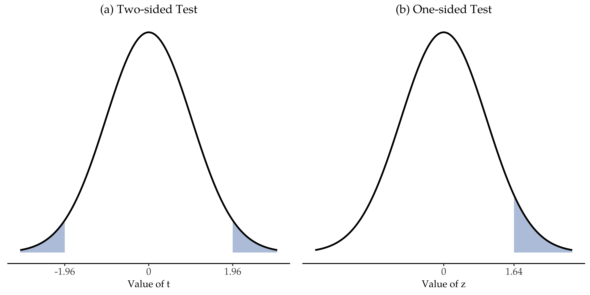
Next, let’s calculate the (true) standard error of the mean (easily done with a calculator):
\[ \begin{split} sem.true & = \frac{sd.true}{\sqrt{N}} \\\\ & = \frac{9.5}{\sqrt{20}} \\\\ & = 2.124265 \end{split} \]
And finally, we calculate our z-score:
\[ \begin{split} z.score & = \frac{sample.mean - mu.null}{sem.true} \\\\ & = \frac{ (72.3 - 67.5)}{ 2.124265} \\\\ & = 2.259606 \end{split} \]
At this point, we would traditionally look up the value \(2.26\) in our table of critical values. Our original hypothesis was two-sided (we didn’t really have any theory about whether psych students would be better or worse at statistics than other students) so our hypothesis test is two-sided (or two-tailed) also. Looking at the little table that I showed earlier, we can see that \(2.26\) is bigger than the critical value of \(1.96\) that would be required to be significant at \(\alpha = .05\), but smaller than the value of \(2.58\) that would be required to be significant at a level of \(\alpha = .01\). Therefore, we can conclude that we have a significant effect, which we might write up by saying something like this:
With a mean grade of \(73.2\) in the sample of psychology students, and assuming a true population standard deviation of \(9.5\), we can conclude that the psychology students have significantly different statistics scores to the class average (\(z = 2.26, N = 20, p<.05\)).
11.1.4 Assumptions of the z-test
As I’ve said before, all statistical tests make assumptions. Some tests make reasonable assumptions, while other tests do not. The test I’ve just described, the one sample z-test, makes three basic assumptions. These are:
- Normality. As usually described, the z-test assumes that the true population distribution is normal.6 This is often a pretty reasonable assumption, and it’s also an assumption that we can check if we feel worried about it (see Section on Checking the normality of a sample).
- Independence. The second assumption of the test is that the observations in your data set are not correlated with each other, or related to each other in some funny way. This isn’t as easy to check statistically, it relies a bit on good experimental design. An obvious (and stupid) example of something that violates this assumption is a data set where you “copy” the same observation over and over again in your data file so that you end up with a massive “sample size”, which consists of only one genuine observation. More realistically, you have to ask yourself if it’s really plausible to imagine that each observation is a completely random sample from the population that you’re interested in. In practice this assumption is never met, but we try our best to design studies that minimise the problems of correlated data.
- Known standard deviation. The third assumption of the z-test is that the true standard deviation of the population is known to the researcher. This is just stupid. In no real world data analysis problem do you know the standard deviation σ of some population but are completely ignorant about the mean \(\mu\). In other words, this assumption is always wrong.
In view of the stupidity of assuming that \(\alpha\) is known, let’s see if we can live without it. This takes us out of the dreary domain of the z-test, and into the magical kingdom of the t-test, with unicorns and fairies and leprechauns!
11.2 The one-sample t-test
After some thought, I decided that it might not be safe to assume that the psychology student grades necessarily have the same standard deviation as the other students in Dr Zeppo’s class. After all, if I’m entertaining the hypothesis that they don’t have the same mean, then why should I believe that they absolutely have the same standard deviation? In view of this, I should really stop assuming that I know the true value of \(\sigma\). This violates the assumptions of my z-test, so in one sense I’m back to square one. However, it’s not like I’m completely bereft of options. After all, I’ve still got my raw data, and those raw data give me an estimate of the population standard deviation, which is 9.52. In other words, while I can’t say that I know that \(\sigma = 9.5\), I can say that \(\hat{\sigma}\) = 9.52.
Okay, cool. The obvious thing that you might think to do is run a z-test, but using the estimated standard deviation of \(9.52\) instead of relying on my assumption that the true standard deviation is \(9.5\). And you probably wouldn’t be surprised to hear that this would still give us a significant result. This approach is close, but it’s not quite correct. Because we are now relying on an estimate of the population standard deviation we need to make some adjustment for the fact that we have some uncertainty about what the true population standard deviation actually is. Maybe our data are just a fluke…maybe the true population standard deviation is \(11\), for instance. But if that were actually true, and we ran the z-test assuming \(\sigma=11\), then the result would end up being non-significant. That’s a problem, and it’s one we’re going to have to address.
11.2.1 Introducing the t-test
This ambiguity is annoying, and it was resolved in 1908 by a guy called William Sealy Gosset (Student, 1908), who was working as a chemist for the Guinness brewery at the time (see Box (1987)). Because Guinness took a dim view of its employees publishing statistical analysis (apparently they felt it was a trade secret), he published the work under the pseudonym “A Student” and, to this day, the full name of the t-test is actually Student’s t-test. The key thing that Gosset figured out is how we should accommodate the fact that we aren’t completely sure what the true standard deviation is.7 The answer is that it subtly changes the sampling distribution. In the t-test our test statistic, now called a t-statistic, is calculated in exactly the same way I mentioned above. If our null hypothesis is that the true mean is \(\mu\), but our sample has mean \(\bar{X}\) and our estimate of the population standard deviation is \(\hat{\sigma}\), then our t statistic is:
\[ t=\frac{\bar{X}-\mu}{\frac{\hat{\sigma}}{\sqrt{N}}} \]
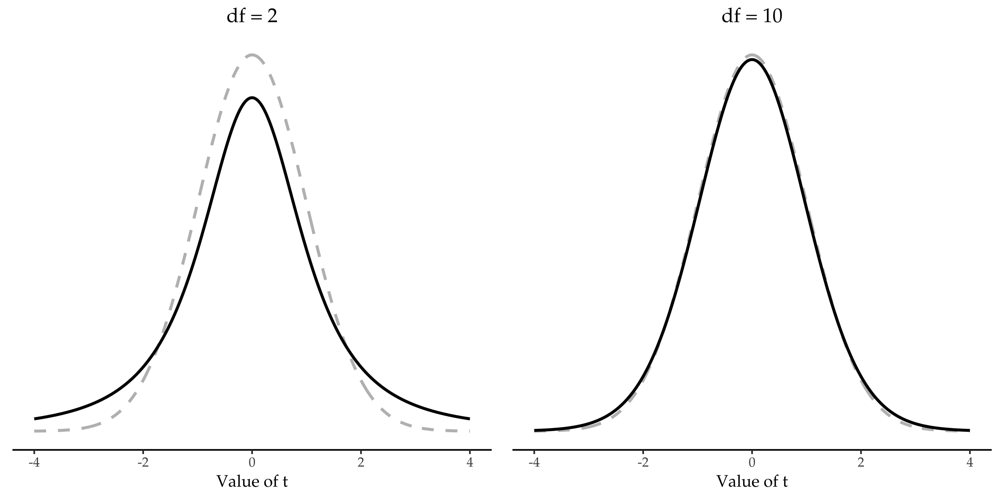
The only thing that has changed in the equation is that instead of using the known true value \(\sigma\), we use the estimate \(\hat{\sigma}\). And if this estimate has been constructed from N observations, then the sampling distribution turns into a t-distribution with \(N-1\) degrees of freedom (df). The t distribution is very similar to the normal distribution, but has “heavier” tails, as discussed earlier in Section 7.6 and illustrated in Figure 11.5. Notice, though, that as df gets larger, the t-distribution starts to look identical to the standard normal distribution. This is as it should be: if you have a sample size of \(N = 70,000,000\) then your “estimate” of the standard deviation would be pretty much perfect, right? So, you should expect that for large \(N\), the t-test would behave exactly the same way as a z-test. And that’s exactly what happens!
11.2.2 Doing the test in jamovi
As you might expect, the mechanics of the t-test are almost identical to the mechanics of the z-test. So there’s not much point in going through the tedious exercise of showing you how to do the calculations using low level commands. It’s pretty much identical to the calculations that we did earlier, except that we use the estimated standard deviation and then we test our hypothesis using the t distribution rather than the normal distribution. And so instead of going through the calculations in tedious detail for a second time, I’ll jump straight to showing you how t-tests are actually done. jamovi comes with a dedicated analysis for t-tests that is very flexible (it can run lots of different kinds of t-tests). It’s pretty straightforward to use; all you need to do is specify ‘Analyses’ - ‘T-Tests’ - ‘One Sample T-Test’, move the variable you are interested in (X) across into the ‘Variables’ box, and type in the mean value for the null hypothesis (‘67.5’) in the ‘Hypothesis’ - ‘Test value’ box. Easy enough. See Figure 11.6, which, amongst other things that we will get to in a moment, gives you a t-test statistic = 2.25, with 19 degrees of freedom and an associated p-value of \(0.036\).
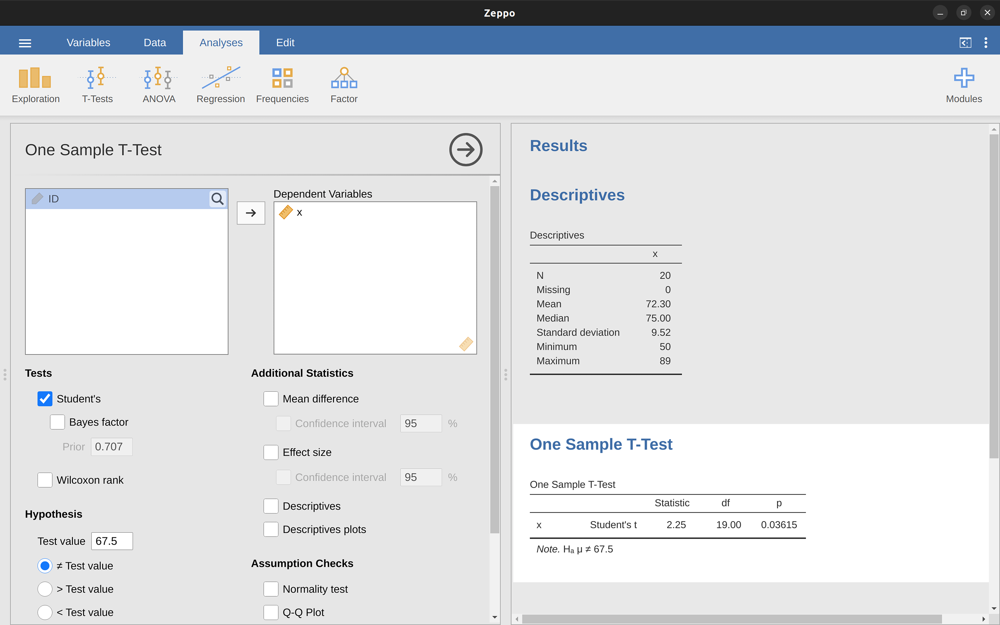
Also reported are two other things you might care about: the 95% confidence interval and a measure of effect size (we’ll talk more about effect sizes later). So that seems straightforward enough. Now what do we do with this output? Well, since we’re pretending that we actually care about my toy example, we’re overjoyed to discover that the result is statistically significant (i.e. p value below .05). We could report the result by saying something like this:
With a mean grade of \(72.3\), the psychology students scored slightly higher than the average grade of \(67.5\) (\(t(19) = 2.25\), \(p = .036\)); the mean difference was \(4.80\) and the \(95\%\) confidence interval was from \(0.34\) to \(9.26\).
…where \(t(19)\) is shorthand notation for a t-statistic that has \(19\) degrees of freedom. That said, it’s often the case that people don’t report the confidence interval, or do so using a much more compressed form than I’ve done here. For instance, it’s not uncommon to see the confidence interval included as part of the stat block after reporting the mean difference, like this:
\[t(19)=2.25, p = .036, CI_{95} = [0.34, 9.26]\] With that much jargon crammed into half a line, you know it must be really smart.8
11.2.3 Assumptions of the one sample t-test
Okay, so what assumptions does the one-sample t-test make? Well, since the t-test is basically a z-test with the assumption of known standard deviation removed, you shouldn’t be surprised to see that it makes the same assumptions as the z-test, minus the one about the known standard deviation. That is
- Normality. We’re still assuming that the population distribution is normal9, and as noted earlier, there are standard tools that you can use to check to see if this assumption is met (Checking the normality of a sample), and other tests you can do in it’s place if this assumption is violated (Testing non-normal data).
- Independence. Once again, we have to assume that the observations in our sample are generated independently of one another. See the earlier discussion about the z-test for specifics (Assumptions of the z-test).
Overall, these two assumptions aren’t terribly unreasonable, and as a consequence the one sample t-test is pretty widely used in practice as a way of comparing a sample mean against a hypothesised population mean.
11.3 The independent samples t-test (Student test)
Although the one sample t-test has its uses, it’s not the most typical example of a t-test10. A much more common situation arises when you’ve got two different groups of observations. In psychology, this tends to correspond to two different groups of participants, where each group corresponds to a different condition in your study. For each person in the study you measure some outcome variable of interest, and the research question that you’re asking is whether or not the two groups have the same population mean. This is the situation that the independent samples t-test is designed for.
11.3.1 The data
Suppose we have 33 students taking Dr Harpo’s statistics lectures, and Dr Harpo doesn’t grade to a curve. Actually, Dr Harpo’s grading is a bit of a mystery, so we don’t really know anything about what the average grade is for the class as a whole. There are two tutors for the class, Anastasia and Bernadette. There are \(N_1 = 15\) students in Anastasia’s tutorials, and \(N_2 = 18\) in Bernadette’s tutorials. The research question I’m interested in is whether Anastasia or Bernadette is a better tutor, or if it doesn’t make much of a difference. Dr Harpo emails me the course grades, in the harpo.csv file. As usual, I’ll load the file into jamovi and have a look at what variables it contains - there are three variables, ID, grade and tutor. The grade variable contains each student’s grade, but it is not imported into jamovi with the correct measurement level attribute, so I need to change this so it is regarded as a continuous variable (see Section 3.6). The tutor variable is a factor that indicates who each student’s tutor was - either Anastasia or Bernadette.
We can calculate means and standard deviations, using the ‘Exploration’ - ‘descriptives’ analysis, and here’s a nice little summary table (Table 11.2).
| mean | std dev | N | |
|---|---|---|---|
| Anastasia's students | 74.53 | 9.00 | 15 |
| Bernadette's students | 69.06 | 5.77 | 18 |
To give you a more detailed sense of what’s going on here, I’ve plotted box and violin plots in jamovi, with mean scores added to the plot with a small solid square. These plots show the distribution of grades for both tutors (Figure 11.7),
11.3.2 Introducing the test
The independent samples t-test comes in two different forms, Student’s and Welch’s. The original Student t-test, which is the one I’ll describe in this section, is the simpler of the two but relies on much more restrictive assumptions than the Welch t-test. Assuming for the moment that you want to run a two-sided test, the goal is to determine whether two “independent samples” of data are drawn from populations with the same mean (the null hypothesis) or different means (the alternative hypothesis). When we say “independent” samples, what we really mean here is that there’s no special relationship between observations in the two samples. This probably doesn’t make a lot of sense right now, but it will be clearer when we come to talk about the paired samples t-test later on. For now, let’s just point out that if we have an experimental design where participants are randomly allocated to one of two groups, and we want to compare the two groups’ mean performance on some outcome measure, then an independent samples t-test (rather than a paired samples t-test) is what we’re after.
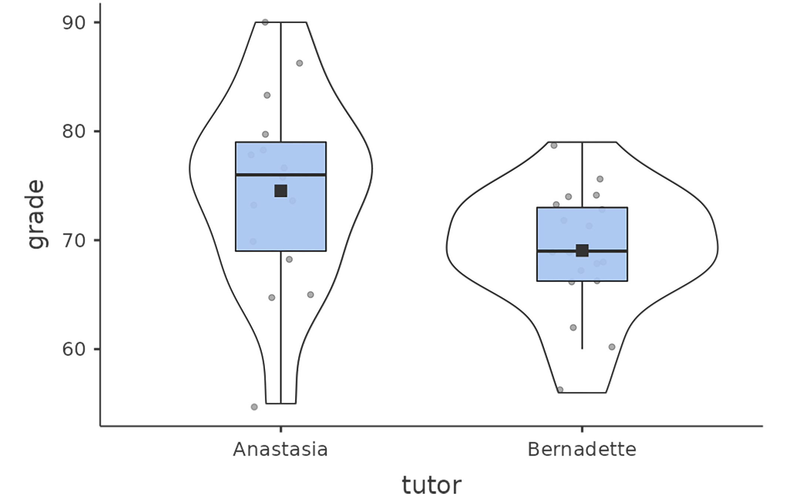
Okay, so let’s let \(\mu_1\) denote the true population mean for group 1 (e.g., Anastasia’s students), and \(\mu_2\) will be the true population mean for group 2 (e.g., Bernadette’s students),11 and as usual we’ll let \(\bar{X_1}\) and \(\bar{X_2}\) denote the observed sample means for both of these groups. Our null hypothesis states that the two population means are identical (\(\mu_1 = \mu_2\)) and the alternative to this is that they are not (\(\mu_1 \neq \mu_2\)) (Figure 11.8). Written in mathematical-ese, this is:
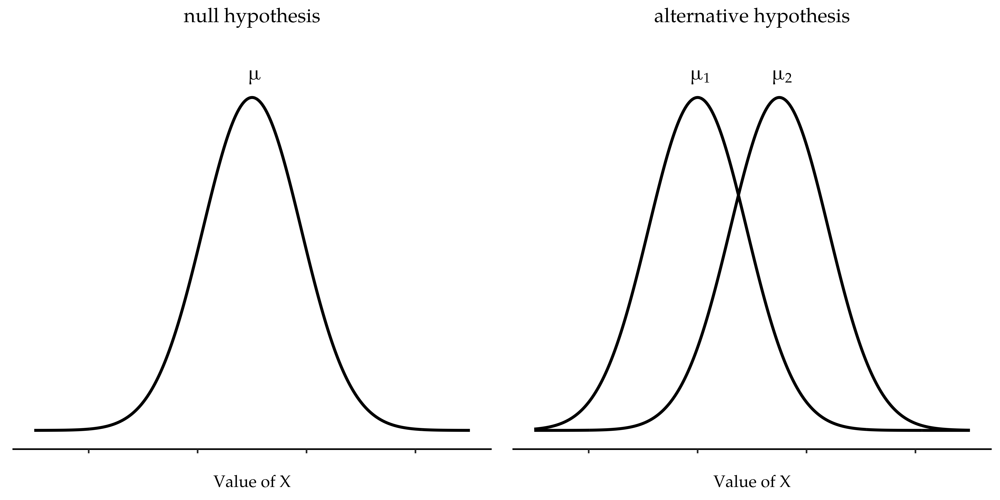
\[H_0: \mu_1=\mu_2 \] \[H_0: \mu_1 \neq \mu_2 \] To construct a hypothesis test that handles this scenario we start by noting that if the null hypothesis is true, then the difference between the population means is exactly zero, \(\mu_1-\mu_2 = 0\). As a consequence, a diagnostic test statistic will be based on the difference between the two sample means. Because if the null hypothesis is true, then we’d expect \(\bar{X}_1 - \bar{X}_2\) to be pretty close to zero. However, just like we saw with our one-sample tests (i.e., the one-sample z-test and the one-sample t-test) we have to be precise about exactly how close to zero this difference should be. And the solution to the problem is more or less the same one. We calculate a standard error estimate (SE), just like last time, and then divide the difference between means by this estimate. So our t-statistic will be of the form:
\[t=\frac{\bar{X_1}-\bar{X_2}}{SE}\]
We just need to figure out what this standard error estimate actually is. This is a bit trickier than was the case for either of the two tests we’ve looked at so far, so we need to go through it a lot more carefully to understand how it works.
11.3.3 A “pooled estimate” of the standard deviation
In the original “Student t-test”, we make the assumption that the two groups have the same population standard deviation. That is, regardless of whether the population means are the same, we assume that the population standard deviations are identical, \(\sigma_1 = \sigma_2\). Since we’re assuming that the two standard deviations are the same, we drop the subscripts and refer to both of them as \(\sigma\). How should we estimate this? How should we construct a single estimate of a standard deviation when we have two samples? The answer is, basically, we average them. Well, sort of. Actually, what we do is take a weighted average of the variance estimates, which we use as our pooled estimate of the variance. The weight assigned to each sample is equal to the number of observations in that sample, minus 1.
[Additional technical detail 12]
11.4 Completing the test
Regardless of which way you want to think about it, we now have our pooled estimate of the standard deviation. From now on, I’ll drop the silly p subscript, and just refer to this estimate as \(\hat{\sigma}\). Great. Let’s now go back to thinking about the bloody hypothesis test, shall we? Our whole reason for calculating this pooled estimate was that we knew it would be helpful when calculating our standard error estimate. But standard error of what? In the one-sample t-test it was the standard error of the sample mean, \(se(\bar{X})\), and since \(se(\bar{X}) = \frac{\sigma}{\sqrt{N}}\) that’s what the denominator of our t-statistic looked like. This time around, however, we have two sample means. And what we’re interested in, specifically, is the the difference between the two \(\bar{X}_1-\bar{X}_2\) As a consequence, the standard error that we need to divide by is in fact the standard error of the difference between means.
[Additional technical detail 13]
Just as we saw with our one-sample test, the sampling distribution of this t-statistic is a t-distribution (shocking, isn’t it?) as long as the null hypothesis is true and all of the assumptions of the test are met. The degrees of freedom, however, is slightly different. As usual, we can think of the degrees of freedom to be equal to the number of data points minus the number of constraints. In this case, we have N observations (\(N_1\) in sample 1, and \(N_2\) in sample 2), and 2 constraints (the sample means). So the total degrees of freedom for this test are \(N - 2\).
11.4.1 Doing the test in jamovi
Not surprisingly, you can run an independent samples t-test easily in jamovi. The outcome variable for our test is the student grade, and the groups are defined in terms of the tutor for each class. So you probably won’t be too surprised that all you have to do in jamovi is go to the relevant analysis (‘Analyses’ - ‘T-Tests’ - ‘Independent Samples T-Test’) and move the grade variable across to the ‘Dependent Variables’ box, and the tutor variable across into the ‘Grouping Variable’ box, as shown in Figure 11.9.
The output has a very familiar form. First, it tells you what test was run, and it tells you the name of the dependent variable that you used. It then reports the test results. Just like last time the test results consist of a t-statistic, the degrees of freedom, and the p-value. The final section reports two things: it gives you a confidence interval and an effect size. I’ll talk about effect sizes later. The confidence interval, however, I should talk about now.
It’s pretty important to be clear on what this confidence interval actually refers to. It is a confidence interval for the difference between the group means. In our example, Anastasia’s students had an average grade of \(74.53\), and Bernadette’s students had an average grade of \(69.06\), so the difference between the two sample means is \(5.48\). But of course the difference between population means might be bigger or smaller than this. The confidence interval reported in Figure 11.10 tells you that there’s a if we replicated this study again and again, then \(95\%\) of the time the true difference in means would lie between \(0.20\) and \(10.76\). Look back at Section 8.5 for a reminder about what confidence intervals mean.
In any case, the difference between the two groups is significant (just barely), so we might write up the result using text like this:
The mean grade in Anastasia’s class was \(74.5\%\) (std dev = \(9.0\)), whereas the mean in Bernadette’s class was \(69.1\%\) (std dev = \(5.8\)). A Student’s independent samples t-test showed that this \(5.4\%\) difference was significant \((t(31) = 2.1, p<.05, CI_{95} = [0.2, 10.8], d = .74)\), suggesting that a genuine difference in learning outcomes has occurred.
Notice that I’ve included the confidence interval and the effect size in the stat block. People don’t always do this. At a bare minimum, you’d expect to see the t-statistic, the degrees of freedom and the p value. So you should include something like this at a minimum: \(t(31) = 2.1, p< .05\). If statisticians had their way, everyone would also report the confidence interval and probably the effect size measure too, because they are useful things to know. But real life doesn’t always work the way statisticians want it to so you should make a judgement based on whether you think it will help your readers and, if you’re writing a scientific paper, the editorial standard for the journal in question. Some journals expect you to report effect sizes, others don’t. Within some scientific communities it is standard practice to report confidence intervals, in others it is not. You’ll need to figure out what your audience expects. But, just for the sake of clarity, if you’re taking my class, my default position is that it’s usually worth including both the effect size and the confidence interval.
11.4.2 Positive and negative t values
Before moving on to talk about the assumptions of the t-test, there’s one additional point I want to make about the use of t-tests in practice. The first one relates to the sign of the t-statistic (that is, whether it is a positive number or a negative one). One very common worry that students have when they start running their first t-test is that they often end up with negative values for the t-statistic and don’t know how to interpret it. In fact, it’s not at all uncommon for two people working independently to end up with results that are almost identical, except that one person has a negative t values and the other one has a positive t value. Assuming that you’re running a two-sided test then the p-values will be identical. On closer inspection, the students will notice that the confidence intervals also have the opposite signs. This is perfectly okay. Whenever this happens, what you’ll find is that the two versions of the results arise from slightly different ways of running the t-test. What’s happening here is very simple. The t-statistic that we calculate here is always of the form
\[t=\frac{\text{mean 1-mean 2}}{SE}\]
If “mean 1” is larger than “mean 2” the t statistic will be positive, whereas if “mean 2” is larger then the t statistic will be negative. Similarly, the confidence interval that jamovi reports is the confidence interval for the difference “(mean 1) minus (mean 2)”, which will be the reverse of what you’d get if you were calculating the confidence interval for the difference “(mean 2) minus (mean 1)”.
Okay, that’s pretty straightforward when you think about it, but now consider our t-test comparing Anastasia’s class to Bernadette’s class. Which one should we call “mean 1” and which one should we call “mean 2”. It’s arbitrary. However, you really do need to designate one of them as “mean 1” and the other one as “mean 2”. Not surprisingly, the way that jamovi handles this is also pretty arbitrary. In earlier versions of the book I used to try to explain it, but after a while I gave up, because it’s not really all that important and to be honest I can never remember myself. Whenever I get a significant t-test result, and I want to figure out which mean is the larger one, I don’t try to figure it out by looking at the t-statistic. Why would I bother doing that? It’s foolish. It’s easier just to look at the actual group means since the jamovi output actually shows them!
Here’s the important thing. Because it really doesn’t matter what jamovi shows you, I usually try to report the t-statistic in such a way that the numbers match up with the text. Suppose that what I want to write in my report is: Anastasia’s class had higher grades than Bernadette’s class. The phrasing here implies that Anastasia’s group comes first, so it makes sense to report the t-statistic as if Anastasia’s class corresponded to group 1. If so, I would write Anastasia’s class had higher grades than Bernadette’s class \((t(31) = 2.1, p = .04)\).
(I wouldn’t actually underline the word “higher” in real life, I’m just doing it to emphasise the point that “higher” corresponds to positive t values). On the other hand, suppose the phrasing I wanted to use has Bernadette’s class listed first. If so, it makes more sense to treat her class as group 1, and if so, the write up looks like this: Bernadette’s class had lower grades than Anastasia’s class \((t(31) = -2.1, p = .04)\).
Because I’m talking about one group having “lower” scores this time around, it is more sensible to use the negative form of the t-statistic. It just makes it read more cleanly.
One last thing: please note that you can’t do this for other types of test statistics. It works for t-tests, but it wouldn’t be meaningful for chi-square tests, F-tests or indeed for most of the tests I talk about in this book. So don’t over-generalise this advice! I’m really just talking about t-tests here and nothing else!
11.4.3 Assumptions of the test
As always, our hypothesis test relies on some assumptions. So what are they? For the Student t-test there are three assumptions, some of which we saw previously in the context of the one sample t-test (see Assumptions of the one sample t-test):
- Normality. Like the one-sample t-test, it is assumed that the data are normally distributed. Specifically, we assume that both groups are normally distributed14. In the section on Checking the normality of a sample we’ll discuss how to test for normality, and in Testing non-normal data we’ll discuss possible solutions.
- Independence. Once again, it is assumed that the observations are independently sampled. In the context of the Student test this has two aspects to it. Firstly, we assume that the observations within each sample are independent of one another (exactly the same as for the one-sample test). However, we also assume that there are no cross-sample dependencies. If, for instance, it turns out that you included some participants in both experimental conditions of your study (e.g., by accidentally allowing the same person to sign up to different conditions), then there are some cross sample dependencies that you’d need to take into account.
- Homogeneity of variance (also called “homoscedasticity”). The third assumption is that the population standard deviation is the same in both groups. You can test this assumption using the Levene test, which I’ll talk about later on in the book (in Section 13.6.1). However, there’s a very simple remedy for this assumption if you are worried, which I’ll talk about in the next section.
11.5 The independent samples t-test (Welch test)
The biggest problem with using the Student test in practice is the third assumption listed in the previous section. It assumes that both groups have the same standard deviation. This is rarely true in real life. If two samples don’t have the same means, why should we expect them to have the same standard deviation? There’s really no reason to expect this assumption to be true. We’ll talk a little bit about how you can check this assumption later on because it does crop up in a few different places, not just the t-test. But right now I’ll talk about a different form of the t-test (Welch, 1947) that does not rely on this assumption. A graphical illustration of what the Welch t test assumes about the data is shown in Figure 11.10, to provide a contrast with the Student test version in Figure 11.8. I’ll admit it’s a bit odd to talk about the cure before talking about the diagnosis, but as it happens the Welch test can be specified as one of the ‘Independent Samples T-Test’ options in jamovi, so this is probably the best place to discuss it.
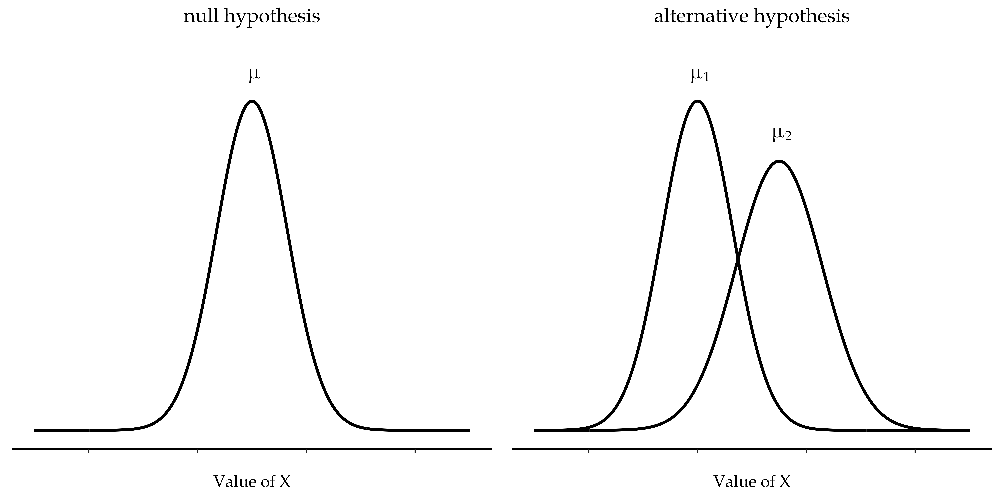
The Welch test is very similar to the Student test. For example, the t-statistic that we use in the Welch test is calculated in much the same way as it is for the Student test. That is, we take the difference between the sample means and then divide it by some estimate of the standard error of that difference
\[t=\frac{\bar{X}_1-\bar{X}_2}{SE(\bar{X}_1-\bar{X}_2)}\]
The main difference is that the standard error calculations are different. If the two populations have different standard deviations, then it’s a complete nonsense to try to calculate a pooled standard deviation estimate, because you’re averaging apples and oranges.15
[Additional technical detail 16]
The second difference between Welch and Student is that the degrees of freedom are calculated in a very different way. In the Welch test, the “degrees of freedom” doesn’t have to be a whole number any more, and it doesn’t correspond all that closely to the “number of data points minus the number of constraints” heuristic that I’ve been using up to this point.
11.5.1 Doing the Welch test in jamovi
If you tick the check box for the Welch test in the analysis we did above, then this is what it gives you (Figure 11.11).
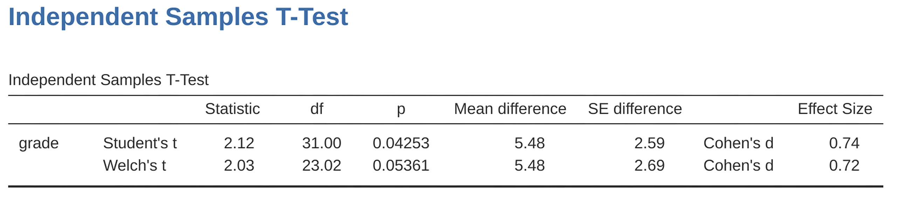
The interpretation of this output should be fairly obvious. You read the output for the Welch’s test in the same way that you would for the Student’s test. You’ve got your descriptive statistics, the test results and some other information. So that’s all pretty easy.
Except, except…our result isn’t significant anymore. When we ran the Student test we did get a significant effect, but the Welch test on the same data set is not \((t(23.02) = 2.03, p = .054)\). What does this mean? Should we panic? Is the sky burning? Probably not. The fact that one test is significant and the other isn’t doesn’t itself mean very much, especially since I kind of rigged the data so that this would happen. As a general rule, it’s not a good idea to go out of your way to try to interpret or explain the difference between a p-value of \(.049\) and a p-value of \(.051\). If this sort of thing happens in real life, the difference in these p-values is almost certainly due to chance. What does matter is that you take a little bit of care in thinking about what test you use. The Student test and the Welch test have different strengths and weaknesses. If the two populations really do have equal variances, then the Student test is slightly more powerful (lower Type II error rate) than the Welch test. However, if they don’t have the same variances, then the assumptions of the Student test are violated and you may not be able to trust it; you might end up with a higher Type I error rate. So it’s a trade off. However, in real life I tend to prefer the Welch test, because almost no-one actually believes that the population variances are identical.
11.5.2 Assumptions of the test
The assumptions of the Welch test are very similar to those made by the Student t-test (see Assumptions of the test, except that the Welch test does not assume homogeneity of variance. This leaves only the assumption of normality and the assumption of independence. The specifics of these assumptions are the same for the Welch test as for the Student test.
11.6 The paired-samples t-test
Regardless of whether we’re talking about the Student test or the Welch test, an independent samples t-test is intended to be used in a situation where you have two samples that are, well, independent of one another. This situation arises naturally when participants are assigned randomly to one of two experimental conditions, but it provides a very poor approximation to other sorts of research designs. In particular, a repeated measures design, in which each participant is measured (with respect to the same outcome variable) in both experimental conditions, is not suited for analysis using independent samples t-tests. For example, we might be interested in whether listening to music reduces people’s working memory capacity. To that end, we could measure each person’s working memory capacity in two conditions: with music, and without music. In an experimental design such as this one, 17 each participant appears in both groups. This requires us to approach the problem in a different way, by using the paired samples t-test.
11.6.1 The data
The data set that we’ll use this time comes from Dr Chico’s class.18 In her class students take two major tests, one early in the semester and one later in the semester. To hear her tell it, she runs a very hard class, one that most students find very challenging. But she argues that by setting hard assessments students are encouraged to work harder. Her theory is that the first test is a bit of a “wake up call” for students. When they realise how hard her class really is, they’ll work harder for the second test and get a better mark. Is she right? To test this, let’s import the chico.csv file into jamovi. This time jamovi does a good job during the import of attributing measurement levels correctly. The chico data set contains three variables: an id variable that identifies each student in the class, the grade_test1 variable that records the student grade for the first test, and the grade_test2 variable that has the grades for the second test.
If we look at the jamovi spreadsheet it does seem like the class is a hard one (most grades are between 50% and 60%), but it does look like there’s an improvement from the first test to the second one.
If we take a quick look at the descriptive statistics, in Figure 11.12, we see that this impression seems to be supported. Across all 20 students the mean grade for the first test is 57%, but this rises to 58% for the second test. Although, given that the standard deviations are 6.6% and 6.4% respectively, it’s starting to feel like maybe the improvement is just illusory; maybe just random variation. This impression is reinforced when you see the means and confidence intervals plotted in Figure 11.13 (a). If we were to rely on this plot alone, looking at how wide those confidence intervals are, we’d be tempted to think that the apparent improvement in student performance is pure chance.
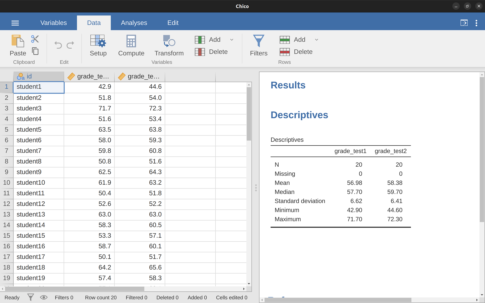
Nevertheless, this impression is wrong. To see why, take a look at the scatterplot of the grades for test 1 against the grades for test 2, shown in Figure 11.13 (b). In this plot each dot corresponds to the two grades for a given student. If their grade for test 1 (x co-ordinate) equals their grade for test 2 (y co-ordinate), then the dot falls on the line. Points falling above the line are the students that performed better on the second test. Critically, almost all of the data points fall above the diagonal line: almost all of the students do seem to have improved their grade, if only by a small amount. This suggests that we should be looking at the improvement made by each student from one test to the next and treating that as our raw data. To do this, we’ll need to create a new variable for the improvement that each student makes, and add it to the chico data set. The easiest way to do this is to compute a new variable, with the expression grade test2 - grade test1.

Once we have computed this new improvement variable we can draw a histogram showing the distribution of these improvement scores, shown in Figure 11.14. When we look at the histogram, it’s very clear that there is a real improvement here. The vast majority of the students scored higher on test 2 than on test 1, reflected in the fact that almost the entire histogram is above zero.

11.6.2 What is the paired samples t-test?
In light of the previous exploration, let’s think about how to construct an appropriate t test. One possibility would be to try to run an independent samples t-test using grade_test1 and grade_test2 as the variables of interest. However, this is clearly the wrong thing to do as the independent samples t-test assumes that there is no particular relationship between the two samples. Yet clearly that’s not true in this case because of the repeated measures structure in the data. To use the language that I introduced in the last section, if we were to try to do an independent samples t-test, we would be conflating the within subject differences (which is what we’re interested in testing) with the between subject variability (which we are not).
The solution to the problem is obvious, I hope, since we already did all the hard work in the previous section. Instead of running an independent samples t-test on grade_test1 and grade_test2, we run a one-sample t-test on the within-subject difference variable, improvement. To formalise this slightly, if \(X_{i1}\) is the score that the i-th participant obtained on the first variable, and \(X_{i2}\) is the score that the same person obtained on the second one, then the difference score is:
\[D_i=X_{i1}-X_{i2}\]
Notice that the difference scores is variable 1 minus variable 2 and not the other way around, so if we want improvement to correspond to a positive valued difference, we actually want “test 2” to be our “variable 1”. Equally, we would say that \(\mu_D = \mu_1 - \mu_2\) is the population mean for this difference variable. So, to convert this to a hypothesis test, our null hypothesis is that this mean difference is zero and the alternative hypothesis is that it is not
\[H_0:\mu_D=0\] \[H_1:\mu_D \neq 0\]
This is assuming we’re talking about a two-sided test here. This is more or less identical to the way we described the hypotheses for the one-sample t-test. The only difference is that the specific value that the null hypothesis predicts is 0. And so our t-statistic is defined in more or less the same way too. If we let \(\bar{D}\) denote the mean of the difference scores, then
\[t=\frac{\bar{D}}{SE(\bar{D})}\] which is \[t=\frac{\bar{D}}{\frac{\hat{\sigma}_D}{\sqrt{N}}}\]
where \(\hat{\sigma}_D\) is the standard deviation of the difference scores. Since this is just an ordinary, one-sample t-test, with nothing special about it, the degrees of freedom are still \(N - 1\). And that’s it. The paired samples t-test really isn’t a new test at all. It’s a one-sample t-test, but applied to the difference between two variables. It’s actually very simple. The only reason it merits a discussion as long as the one we’ve just gone through is that you need to be able to recognise when a paired samples test is appropriate, and to understand why it’s better than an independent samples t test.
11.6.3 Doing the test in jamovi
How do you do a paired samples t-test in jamovi? One possibility is to follow the process I outlined above. That is, create a “difference” variable and then run a one sample t-test on that. Since we’ve already created a variable called improvement, let’s do that and see what we get, Figure 11.15.
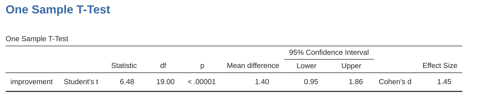
The output shown in Figure 11.15 is (obviously) formatted exactly the same was as it was the last time we used the one-sample t-Test analysis (Section 11.2), and it confirms our intuition. There’s an average improvement of \(1.4\%\) from test 1 to test 2, and this is significantly different from \(0\) \((t(19) = 6.48, p< .001)\).
However, suppose you’re lazy and you don’t want to go to all the effort of creating a new variable. Or perhaps you just want to keep the difference between one-sample and paired samples tests clear in your head. If so, you can use the jamovi ‘Paired Samples T-Test’ analysis, getting the results shown in Figure 11.16.
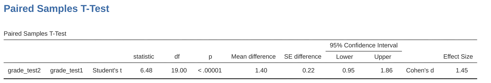
The numbers are identical to those that come from the one sample test, which of course they have to be given that the paired samples t-test is just a one sample test under the hood.
11.7 One-sided tests
When introducing the theory of null hypothesis tests, I mentioned that there are some situations when it’s appropriate to specify a one-sided test (see Section 9.4.3). So far all of the t-tests have been two-sided tests. For instance, when we specified a one sample t-test for the grades in Dr Zeppo’s class the null hypothesis was that the true mean was \(67.5\%\). The alternative hypothesis was that the true mean was greater than or less than \(67.5\%\). Suppose we were only interested in finding out if the true mean is greater than \(67.5\%\), and have no interest whatsoever in testing to find out if the true mean is lower than \(67.5\%\). If so, our null hypothesis would be that the true mean is \(67.5\%\) or less, and the alternative hypothesis would be that the true mean is greater than \(67.5\%\). In jamovi, for the ‘One Sample T-Test’ analysis, you can specify this by clicking on the ‘\(>\) Test Value’ option, under ‘Hypothesis’. When you have done this, you will get the results as shown in Figure 11.17.
Notice that there are a few changes from the output that we saw last time. Most important is the fact that the actual hypothesis has changed, to reflect the different test. The second thing to note is that although the t-statistic and degrees of freedom have not changed, the p-value has. This is because the one-sided test has a different rejection region from the two-sided test. If you’ve forgotten why this is and what it means, you may find it helpful to read back over Chapter 9, and Section 9.4.3 in particular. The third thing to note is that the confidence interval is different too: it now reports a “one-sided” confidence interval rather than a two-sided one. In a two-sided confidence interval we’re trying to find numbers a and b such that we’re confident that, if we were to repeat the study many times, then \(95\%\) of the time the mean would lie between a and b. In a one-sided confidence interval, we’re trying to find a single number a such that we’re confident that \(95\%\) of the time the true mean would be greater than a (or less than a if you selected Measure 1 < Measure 2 in the ‘Hypothesis’ section).
So that’s how to do a one-sided one sample t-test. However, all versions of the t-test can be one-sided. For an independent samples t test, you could have a one-sided test if you’re only interested in testing to see if group A has higher scores than group B, but have no interest in finding out if group B has higher scores than group A. Let’s suppose that, for Dr Harpo’s class, you wanted to see if Anastasia’s students had higher grades than Bernadette’s. For this analysis, in the ‘Hypothesis’ options, specify that ‘Group 1 > Group2’. You should get the results shown in Figure 11.18.
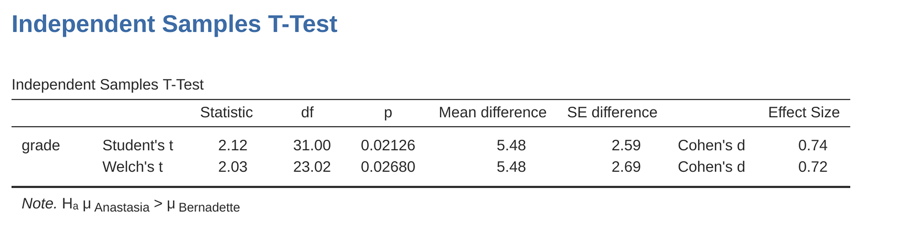
Again, the output changes in a predictable way. The definition of the alternative hypothesis has changed, the p-value has changed, and it now reports a one-sided confidence interval rather than a two-sided one.
What about the paired samples t-test? Suppose we wanted to test the hypothesis that grades go up from test 1 to test 2 in Dr Zeppo’s class, and are not prepared to consider the idea that the grades go down. In jamovi you would do this by specifying, under the ‘Hypotheses’ option, that grade_test2 (‘Measure 1’ in jamovi, because we copied this first into the paired variables box) > grade test1 (‘Measure 2’ in jamovi). You should get the results shown in Figure 11.19.
Yet again, the output changes in a predictable way. The hypothesis has changed, the p-value has changed, and the confidence interval is now one-sided.
11.8 Effect size
The most commonly used measure of effect size for a t-test is Cohen’s d (Cohen, 1988). It’s a very simple measure in principle, with quite a few wrinkles when you start digging into the details. Cohen himself defined it primarily in the context of an independent samples t-test, specifically the Student test. In that context, a natural way of defining the effect size is to divide the difference between the means by an estimate of the standard deviation. In other words, we’re looking to calculate something along the lines of this:
\[d=\frac{(\text{mean 1})-(\text{mean 2})}{\text{std dev}}\]
and he suggested a rough guide for interpreting \(d\) in Table 11.3.
| d-value | rough interpretation |
|---|---|
| about 0.2 | "small" effect |
| about 0.5 | "moderate" effect |
| about 0.8 | "large" effect |
You’d think that this would be pretty unambiguous, but it’s not. This is largely because Cohen wasn’t too specific on what he thought should be used as the measure of the standard deviation (in his defence he was trying to make a broader point in his book, not nitpick about tiny details). As discussed by McGrath & Meyer (2006), there are several different versions in common usage, and each author tends to adopt slightly different notation. For the sake of simplicity (as opposed to accuracy), I’ll use d to refer to any statistic that you calculate from the sample, and use \(\delta\) to refer to a theoretical population effect. Obviously, that does mean that there are several different things all called d.
My suspicion is that the only time that you would want Cohen’s d is when you’re running a t-test, and jamovi has an option to calculate the effect size for all the different flavours of t-test it provides.
11.8.1 Cohen’s d from one sample
The simplest situation to consider is the one corresponding to a one-sample t-test. In this case, this is the one sample mean \(\bar{X}\) and one (hypothesised) population mean \(\mu_0\) to compare it to. Not only that, there’s really only one sensible way to estimate the population standard deviation. We just use our usual estimate \(\hat{\sigma}\). Therefore, we end up with the following as the only way to calculate \(d\)
\[d=\frac{\bar{X}-\mu_0}{\hat{\sigma}}\]
When we look back at the results in Figure 11.6, the effect size value is Cohen’s \(d = 0.50\). Overall, then, the psychology students in Dr Zeppo’s class are achieving grades (\(mean = 72.3\%\)) that are about .5 standard deviations higher than the level that you’d expect (\(67.5\%\)) if they were performing at the same level as other students. Judged against Cohen’s rough guide, this is a moderate effect size.
11.8.2 Cohen’s d from a Student’s t test
The majority of discussions of Cohen’s \(d\) focus on a situation that is analogous to Student’s independent samples t test, and it’s in this context that the story becomes messier, since there are several different versions of \(d\) that you might want to use in this situation. To understand why there are multiple versions of \(d\), it helps to take the time to write down a formula that corresponds to the true population effect size \(\delta\). It’s pretty straightforward,
\[\delta=\frac{\mu_1-\mu_2}{\sigma}\]
where, as usual, \(\mu_1\) and \(\mu_2\) are the population means corresponding to group 1 and group 2 respectively, and \(\sigma\) is the standard deviation (the same for both populations). The obvious way to estimate \(\delta\) is to do exactly the same thing that we did in the t-test itself, i.e., use the sample means as the top line and a pooled standard deviation estimate for the bottom line
\[d=\frac{\bar{X}_1-\bar{X}_2}{\hat{\sigma}_p}\]
where \(\hat{\sigma}_p\) is the exact same pooled standard deviation measure that appears in the t-test. This is the most commonly used version of Cohen’s d when applied to the outcome of a Student t-test, and is the one provided in jamovi. It is sometimes referred to as Hedges’ \(g\) statistic (Hedges, 1981).
However, there are other possibilities which I’ll briefly describe. Firstly, you may have reason to want to use only one of the two groups as the basis for calculating the standard deviation. This approach (often called Glass’ \(\triangle\), pronounced delta) only makes most sense when you have good reason to treat one of the two groups as a purer reflection of “natural variation” than the other. This can happen if, for instance, one of the two groups is a control group. Secondly, recall that in the usual calculation of the pooled standard deviation we divide by \(N - 2\) to correct for the bias in the sample variance. In one version of Cohen’s d this correction is omitted, and instead we divide by \(N\). This version makes sense primarily when you’re trying to calculate the effect size in the sample rather than estimating an effect size in the population. Finally, there is a version called Hedge’s g, based on Hedges & Olkin (1985), who point out there is a small bias in the usual (pooled) estimation for Cohen’s d.19
In any case, ignoring all those variations that you could make use of if you wanted, let’s have a look at the default version in jamovi. In Figure 11.10 Cohen’s \(d = 0.74\), indicating that the grade scores for students in Anastasia’s class are, on average, \(0.74\) standard deviations higher than the grade scores for students in Bernadette’s class. For a Welch test, the estimated effect size is the same (Figure 11.12).
11.8.3 Cohen’s d from a paired-samples test
Finally, what should we do for a paired samples t-test? In this case, the answer depends on what it is you’re trying to do. jamovi assumes that you want to measure your effect sizes relative to the distribution of difference scores, and the measure of d that you calculate is:
\[d=\frac{\bar{D}}{\hat{\sigma}_D}\]
where \(\hat{\sigma}_D\) is the estimate of the standard deviation of the differences. In Figure 11.16 Cohen’s \(d = 1.45\), indicating that the time 2 grade scores are, on average, \(1.45\) standard deviations higher than the time 1 grade scores.
This is the version of Cohen’s \(d\) that gets reported by the jamovi ‘Paired Samples T-Test’ analysis. The only wrinkle is figuring out whether this is the measure you want or not. To the extent that you care about the practical consequences of your research, you often want to measure the effect size relative to the original variables, not the difference scores (e.g., the 1% improvement in Dr Chico’s class over time is pretty small when measured against the amount of between-student variation in grades), in which case you use the same versions of Cohen’s d that you would use for a Student or Welch test. It’s not so straightforward to do this in jamovi; essentially you have to change the structure of the data in the spreadsheet view so I won’t go into that here20, but the Cohen’s d for this perspective is quite different: it is \(0.22\) which is quite small when assessed on the scale of the original variables.
11.9 Checking the normality of a sample
All of the tests that we have discussed so far in this chapter have assumed that the data are normally distributed. This assumption is often quite reasonable, because the Central Limit Theorem (see Section 8.3.3) does tend to ensure that many real world quantities are normally distributed. Any time that you suspect that your variable is actually an average of lots of different things, there’s a pretty good chance that it will be normally distributed, or at least close enough to normal that you can get away with using t-tests. However, life doesn’t come with guarantees, and besides there are lots of ways in which you can end up with variables that are highly non-normal. For example, any time you think that your variable is actually the minimum of lots of different things, there’s a very good chance it will end up quite skewed. In psychology, response time (RT) data is a good example of this. If you suppose that there are lots of things that could trigger a response from a human participant, then the actual response will occur the first time one of these trigger events occurs.21 This means that RT data are systematically non-normal. Okay, so if normality is assumed by all the tests, and is mostly but not always satisfied (at least approximately) by real world data, how can we check the normality of a sample? In this section I discuss two methods: QQ plots and the Shapiro-Wilk test.
11.9.1 QQ plots
One way to check whether a sample violates the normality assumption is to draw a “QQ plot” (Quantile-Quantile plot). This allows you to visually check whether you’re seeing any systematic violations. In a QQ plot, each observation is plotted as a single dot. The x coordinate is the theoretical quantile that the observation should fall in if the data were normally distributed (with mean and variance estimated from the sample), and on the y co-ordinate is the actual quantile of the data within the sample. If the data are normal, the dots should form a straight line. For instance, lets see what happens if we generate data by sampling from a normal distribution, and then drawing a QQ plot. The results are shown in Figure 11.20.
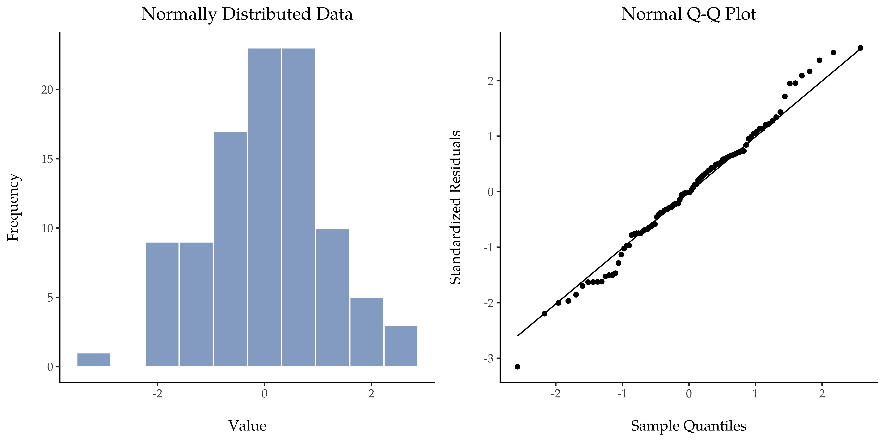
As you can see, these data form a pretty straight line; which is no surprise given that we sampled them from a normal distribution! In contrast, have a look at the two data sets shown in Figure 11.21. The top panels show the histogram and a QQ plot for a data set that is highly skewed: the QQ plot curves upwards. The lower panels show the same plots for a heavy tailed (i.e., high kurtosis) data set: in this case the QQ plot flattens in the middle and curves sharply at either end.

11.9.2 QQ plots for independent and paired t tests
In our previous analyses we showed how to conduct in jamovi an independent t test (Figure 11.10) and a paired samples t test (Figure 11.16). And for these analyses jamovi provides an option to show a QQ plot for the difference scores (which jamovi calls the ‘residuals’), which is a better way of checking the normality assumption. When we select this option for these analyses, we get the QQ plots shown in Figure 11.22 and Figure 11.23, respectively. My interpretation is that these plots both show that the difference scores are reasonably normally distributed, so we are good to go!
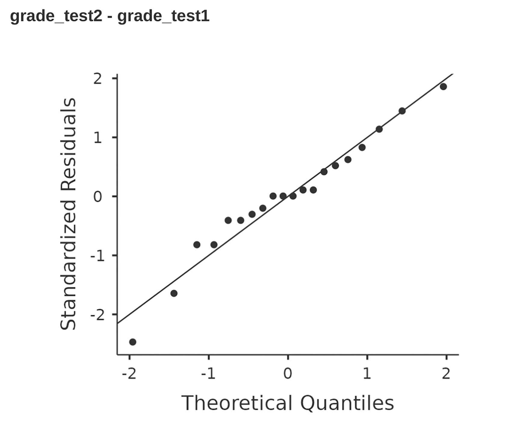
11.9.3 Shapiro-Wilk tests
QQ plots provide a nice way to informally check the normality of your data, but sometimes you’ll want to do something a bit more formal and the Shapiro-Wilk test (Shapiro & Wilk, 1965) is probably what you’re looking for.22 As you’d expect, the null hypothesis being tested is that a set of \(N\) observations is normally distributed.
[Additional technical detail 23]

To get the Shapiro-Wilk statistic in jamovi t-tests, check the option for ‘Normality’ listed under ‘Assumptions’. In the randomly sampled data (\(N = 100\)) we used for the QQ plot, the value for the Shapiro-Wilk normality test statistic was \(W = 0.99\) with a p-value of \(0.54\). So, not surprisingly, we have no evidence that these data depart from normality. When reporting the results for a Shapiro-Wilk test, you should (as usual) make sure to include the test statistic \(W\) and the p value, though given that the sampling distribution depends so heavily on \(N\) it would probably be a politeness to include \(N\) as well.
11.9.4 Example
In the meantime, it’s probably worth showing you an example of what happens to the QQ plot and the Shapiro-Wilk test when the data turn out to be non-normal. For that, let’s look at the distribution of our AFL winning margins data, which if you remember back to Chapter 4 it didn’t look like they came from a normal distribution at all. Here’s what happens to the QQ plot (Figure 11.25).

And when we run the Shapiro-Wilk test on the AFL margins data, we get a value for the Shapiro-Wilk normality test statistic of \(W = 0.94\), and p-value = \(9.481\)x\(10^{-07}\). Clearly a significant effect!
11.10 Testing non-normal data
Okay, suppose your data turn out to be pretty substantially non-normal, but you still want to run something like a t-test? This situation occurs a lot in real life. For the AFL winning margins data, for instance, the Shapiro-Wilk test made it very clear that the normality assumption is violated. This is the situation where you want to use Wilcoxon tests.
Like the t-test, the Wilcoxon test comes in two forms, one-sample and two-sample, and they’re used in more or less the exact same situations as the corresponding t-tests. Unlike the t-test, the Wilcoxon test doesn’t assume normality, which is nice. In fact, they don’t make any assumptions about what kind of distribution is involved. In statistical jargon, this makes them nonparametric tests. While avoiding the normality assumption is nice, there’s a drawback: the Wilcoxon test is usually less powerful than the t-test (i.e., higher Type II error rate). I won’t discuss the Wilcoxon tests in as much detail as the t-tests, but I’ll give you a brief overview.
11.10.1 Two sample Mann-Whitney U test
I’ll start by describing the Mann-Whitney U test, since it’s actually simpler than the one sample version. Suppose we’re looking at the scores of 10 people on some test. Since my imagination has now failed me completely, let’s pretend it’s a “test of awesomeness” and there are two groups of people, “A” and “B”. I’m curious to know which group is more awesome. The data are included in the file awesome.csv, and there are two variables apart from the usual ID variable: scores and group.
As long as there are no ties (i.e., people with the exact same awesomeness score) then the test that we want to do is surprisingly simple. All we have to do is construct a table that compares every observation in group A against every observation in group B. Whenever the group A datum is larger, we place a check mark in the table (Table 11.4).
| group B | ||||||
|---|---|---|---|---|---|---|
| 14.5 | 10.4 | 12.4 | 11.7 | 13.0 | ||
| group A | 6.4 | . | . | . | . | . |
| 10.7 | . | \( \checkmark \) | . | . | . | |
| 11.9 | . | \( \checkmark \) | . | \( \checkmark \) | . | |
| 7.3 | . | . | . | . | . | |
| 10 | . | . | . | . | . | |
We then count up the number of checkmarks. This is our test statistic, W. 24 The actual sampling distribution for W is somewhat complicated, and I’ll skip the details. For our purposes, it’s sufficient to note that the interpretation of W is qualitatively the same as the interpretation of \(t\) or \(z\). That is, if we want a two-sided test then we reject the null hypothesis when W is very large or very small, but if we have a directional (i.e., one-sided) hypothesis then we only use one or the other.
In jamovi, if we run an ‘Independent Samples T-Test’ with scores as the dependent variable. and group as the grouping variable, and then under the options for ‘tests’ check the option for ’Mann-Whitney \(U\), we will get results showing that \(U = 3\) (i.e., the same number of checkmarks as shown above), and a p-value = \(0.05556\). See Figure 11.26.

11.10.2 One sample Wilcoxon test
What about the one sample Wilcoxon test (or equivalently, the paired samples Wilcoxon test)? Suppose I’m interested in finding out whether taking a statistics class has any effect on the happiness of students. My data is in the happiness.csv file. What I’ve measured here is the happiness of each student before taking the class and after taking the class, and the change score is the difference between the two. Just like we saw with the t-test, there’s no fundamental difference between doing a paired-samples test using before and after, versus doing a onesample test using the change scores. As before, the simplest way to think about the test is to construct a tabulation. The way to do it this time is to take those change scores that are positive differences, and tabulate them against all the complete sample. What you end up with is a table that looks like Table 11.5.
| all differences | ||||||||||||
|---|---|---|---|---|---|---|---|---|---|---|---|---|
| \(-24\) | \(-14\) | \(-10\) | 7 | \(-6\) | \(-38\) | 2 | \(-35\) | \(-30\) | 5 | |||
| positive differences | 7 | . | . | . | \( \checkmark \) | \( \checkmark \) | . | \( \checkmark \) | . | . | \( \checkmark \) | |
| 2 | . | . | . | . | . | . | \( \checkmark \) | . | . | . | ||
| 5 | . | . | . | . | . | . | \( \checkmark \) | . | . | \( \checkmark \) | ||
Counting up the tick marks this time we get a test statistic of \(W = 7\). As before, if our test is two sided, then we reject the null hypothesis when W is very large or very small. As far as running it in jamovi goes, it’s pretty much what you’d expect. For the one-sample version, you specify the ‘Wilcoxon rank’ option under ‘Tests’ in the ‘One Sample T-Test’ analysis window. This gives you Wilcoxon \(W = 7\), p-value = \(0.03711\). As this shows, we have a significant effect. Evidently, taking a statistics class does have an effect on your happiness. Switching to a paired samples version of the test won’t give us a different answer, of course; see Figure 11.27.

11.11 Summary
- The one-sample t-test is used to compare a single sample mean against a hypothesised value for the population mean.
- An independent samples t-test is used to compare the means of two groups, and tests the null hypothesis that they have the same mean. It comes in two forms: The independent samples t-test (Student test) assumes that the groups have the same standard deviation, The independent samples t-test (Welch test) does not.
- The paired-samples t-test is used when you have two scores from each person, and you want to test the null hypothesis that the two scores have the same mean. It is equivalent to taking the difference between the two scores for each person, and then running a one sample t-test on the difference scores.
- One-sided tests are perfectly legitimate as long as they are pre-planned (like all tests!).
- Effect size calculations for the difference between means can be calculated via the Cohen’s d statistic.
- Checking the normality of a sample using QQ plots and the Shapiro-Wilk test.
- If your data are non-normal, you can use Mann-Whitney or Wilcoxon tests instead of t-tests for Testing non-normal data.
Informal experimentation in my garden suggests that yes, it does. Australian natives are adapted to low phosphorus levels relative to everywhere else on Earth, so if you’ve bought a house with a bunch of exotics and you want to plant natives, keep them separate; nutrients to European plants are poison to Australian ones.↩︎
In order to do this I had to change the measurement level for \(X\) to ‘Continuous’, as during the opening / import of the csv file jamovi made this a nominal level variable, which isn’t right for my analysis↩︎
Adopting the notation from Section 7.5, a statistician might write this as: \[X \sim Normal(\mu_0,\sigma^2)\]↩︎
In other words, if the null hypothesis is true then the sampling distribution of the mean can be written as follows: \[\bar{X} \sim Normal(\mu_0,SE(\bar{X})) \]↩︎
Again, see Section 4.5 if you’ve forgotten why this is true.↩︎
Actually this is too strong. Strictly speaking the z test only requires that the sampling distribution of the mean be normally distributed. If the population is normal then it necessarily follows that the sampling distribution of the mean is also normal. However, as we saw when talking about the central limit theorem, it’s quite possible (even commonplace) for the sampling distribution to be normal even if the population distribution itself is nonnormal. However, in light of the sheer ridiculousness of the assumption that the true standard deviation is known, there really isn’t much point in going into details on this front!↩︎
Well, sort of. As I understand the history, Gosset only provided a partial solution; the general solution to the problem was provided by Sir Ronald Fisher.↩︎
More seriously, I tend to think the reverse is true. I get very suspicious of technical reports that fill their results sections with nothing except the numbers. It might just be that I’m an arrogant jerk, but I often feel like an author that makes no attempt to explain and interpret their analysis to the reader either doesn’t understand it themselves, or is being a bit lazy. Your readers are smart, but not infinitely patient. Don’t annoy them if you can help it.↩︎
A technical comment. In the same way that we can weaken the assumptions of the z-test so that we’re only talking about the sampling distribution, we can weaken the t-test assumptions so that we don’t have to assume normality of the population. However, for the t-test it’s trickier to do this. As before, we can replace the assumption of population normality with an assumption that the sampling distribution of \(\bar{X}\) is normal. However, remember that we’re also relying on a sample estimate of the standard deviation, and so we also require the sampling distribution of \(\hat{\sigma}\) to be chi-square. That makes things nastier, and this version is rarely used in practice. Fortunately, if the population distribution is normal, then both of these two assumptions are met.↩︎
Although it is the simplest, which is why I started with it.↩︎
A funny question almost always pops up at this point: what the heck is the population being referred to in this case? Is it the set of students actually taking Dr Harpo’s class (all 33 of them)? The set of people who might take the class (an unknown number of them)? Or something else? Does it matter which of these we pick? It’s traditional in an introductory behavioural stats class to mumble a lot at this point, but since I get asked this question every year by my students, I’ll give a brief answer. Technically yes, it does matter. If you change your definition of what the “real world” population actually is, then the sampling distribution of your observed mean \(\bar{X}\) changes too. The t-test relies on an assumption that the observations are sampled at random from an infinitely large population and, to the extent that real life isn’t like that, then the t-test can be wrong. In practice, however, this isn’t usually a big deal. Even though the assumption is almost always wrong, it doesn’t lead to a lot of pathological behaviour from the test, so we tend to just ignore it.↩︎
Mathematically, we can write this as \[w_1=N_1-1\] \[w_2=N_2-1\] Now that we’ve assigned weights to each sample we calculate the pooled estimate of the variance by taking the weighted average of the two variance estimates, \(\hat{sigma}_{1}^{2}\) and \(\hat{sigma}_{2}^{2}\) \[\hat{\sigma}_p^2=\frac{w_1\hat{\sigma}_1^2+w_2\hat{\sigma}_2^2}{w_1+w_2}\] Finally, we convert the pooled variance estimate to a pooled standard deviation estimate, by taking the square root. \[\hat{\sigma}_p=\sqrt{\frac{w_1\hat{\sigma}_1^2+w_2\hat{\sigma}_2^2}{w_1+w_2}}\] And if you mentally substitute \((w_1 = N_1 - 1)\) and \(w_2 = N_2 - 1\) into this equation you get a very ugly looking formula. A very ugly formula that actually seems to be the “standard” way of describing the pooled standard deviation estimate. It’s not my favourite way of thinking about pooled standard deviations, however. I prefer to think about it like this. Our data set actually corresponds to a set of N observations which are sorted into two groups. So let’s use the notation \(X_{ik}\) to referto the grade received by the i-th student in the k-th tutorial group. That is, \((X_{11}\) is the grade received by the first student in Anastasia’s class, \(X_{21}\) is her second student, and so on. And we have two separate group means \(\bar{X}_1\) and \(\bar{X}_2\), which we could “generically” refer to using the notation \(\bar{X}_k\), i.e., the mean grade for the k-th tutorial group. So far, so good. Now, since every single student falls into one of the two tutorials, we can describe their deviation from the group mean as the difference \[X_{ik}-\bar{X}_k\] So why not just use these deviations (i.e., the extent to which each student’s grade differs from the mean grade in their tutorial)? Remember, a variance is just the average of a bunch of squared deviations, so let’s do that. Mathematically, we could write it like this \[\frac{\sum_{ik}(X_{ik}-\bar{X}_k)^2}{N}\] where the notation “\(\sum_{ik}\)” is a lazy way of saying “calculate a sum by looking at all students in all tutorials”, since each “\(_{ik}\)” corresponds to one student.\(^a\) But, as we saw in Chapter 8, calculating the variance by dividing by N produces a biased estimate of the population variance. And previously we needed to divide by \((N - 1)\) to fix this. However, as I mentioned at the time, the reason why this bias exists is because the variance estimate relies on the sample mean, and to the extent that the sample mean isn’t equal to the population mean it can systematically bias our estimate of the variance. But this time we’re relying on two sample means! Does this mean that we’ve got more bias? Yes, yes it does. And does this mean we now need to divide by \((N - 2)\) instead of \((N - 1)\), in order to calculate our pooled variance estimate? Why, yes \[\hat {\sigma}_p^2=\frac{\sum_{ik}(X_{ik}-\bar{X}_k)^2}{N-2}\] Oh, and if you take the square root of this then you get \(\hat{\sigma}_p\), the pooled standard deviation estimate. In other words, the pooled standard deviation calculation is nothing special. It’s not terribly different to the regular standard deviation calculation.
—
\(^a\) A more correct notation will be introduced in Chapter 13.↩︎As long as the two variables really do have the same standard deviation, then our estimate for the standard error is \[SE(\bar{X}_1-\bar{X}_2)=\hat{\sigma}\sqrt{\frac{1}{N_1}+\frac{1}{N_2}}\] and our t-statistic is therefore \[t=\frac{\bar{X}_1-\bar{X}_2}{SE(\bar{X}_1-\bar{X}_2)}\]↩︎
Strictly speaking, it is the difference in the means that should be normally distributed, but if both groups have normally distributed data then the difference in means will also be normally distributed. In practice, the Central Limit Theorem assures us that, generally, the distributions of the two sample means being tested will themselves approach normal distributions as the sample sizes get large, regardless of the distributions of the underlying data.↩︎
Well, I guess you can average apples and oranges, and what you end up with is a delicious fruit smoothie. But no one really thinks that a fruit smoothie is a very good way to describe the original fruits, do they?↩︎
But you can still estimate the standard error of the difference between sample means, it just ends up looking different \[SE(\bar{X}_1-\bar{X}_2)=\sqrt{\frac{\hat{\sigma}_1^2}{N_1}+\frac{\hat{\sigma}_2^2}{N_2}}\] The reason why it’s calculated this way is beyond the scope of this book. What matters for our purposes is that the t-statistic that comes out of the Welch t-test is actually somewhat different to the one that comes from the Student t-test.↩︎
This design is very similar to the one that motivated the McNemar test (Section 10.7). This should be no surprise. Both are standard repeated measures designs involving two measurements. The only difference is that this time our outcome variable is interval scale (working memory capacity) rather than a binary, nominal scale variable (a yes-or-no question).↩︎
At this point we have Drs Harpo, Chico and Zeppo. No prizes for guessing who Dr Groucho is.↩︎
They introduce a small correction by multiplying the usual value of \(d\) by \(\frac{(N - 3)}{(N - 2.25)}\).↩︎
If you are interested, you can look at how this was done in the chico2.omv file↩︎
This is a massive oversimplification.↩︎
Either that, or the Kolmogorov-Smirnov test, which is probably more traditional than the Shapiro-Wilk. Although most things I’ve read seem to suggest Shapiro-Wilk is the better test of normality, the Kolomogorov Smirnov is a general purpose test of distributional equivalence that can be adapted to handle other kinds of distribution tests. In jamovi the Shapiro-Wilk test is preferred.↩︎
The test statistic that it calculates is conventionally denoted as \(W\), and it’s calculated as follows. First, we sort the observations in order of increasing size, and let \(\bar{X_1}\) be the smallest value in the sample, \(X_2\) be the second smallest and so on. Then the value of \(W\) is given by \[W=\frac{(\sum_{i=1}^N a_iX_i)^2}{\sum_{i=1}^N(X_i-\bar{X})^2}\] where \(\bar{X}\) is the mean of the observations, and the \(a_i\) values are …mumble, mumble… something complicated that is a bit beyond the scope of an introductory text.↩︎
Actually, there are two different versions of the test statistic that differ from each other by a constant value. The version that I’ve described is the one that jamovi calculates.↩︎